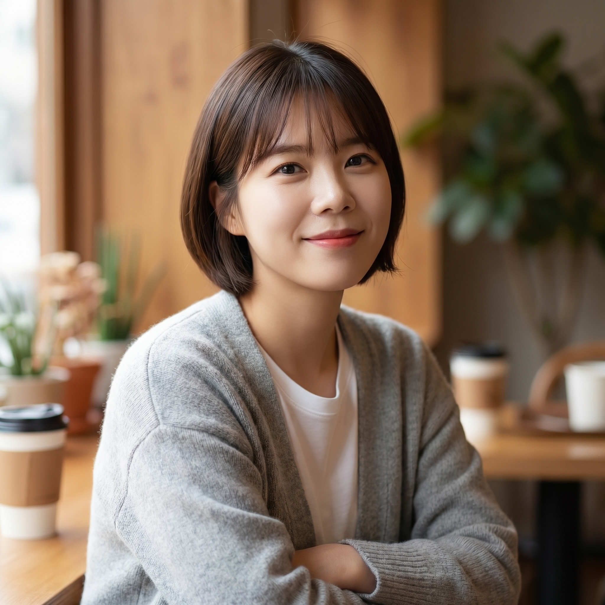
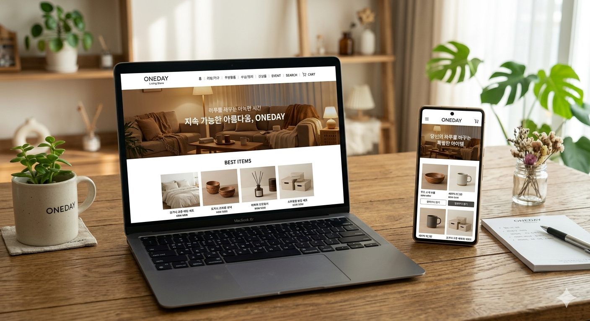
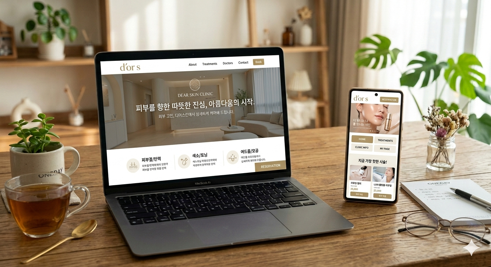
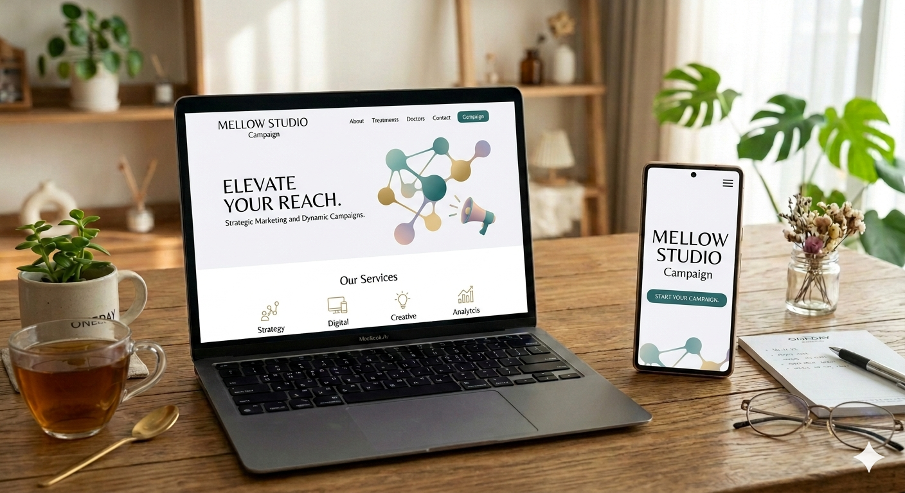

기획을 읽는 디자인
목표 고객과 서비스 톤을 분석해 정보 구조, 카피, 화면 흐름을 하나의 메시지로 정리합니다.
UI/UX Designer · Web Creator
Lucy Kang은 UI/UX 디자인과 웹사이트 제작을 함께 다루며, 기획의 의도부터 실제 화면까지 자연스럽게 연결하는 디자이너입니다.

UI/UX Design · Homepage · Website
브랜드의 첫인상, 사용자의 다음 행동, 운영자가 관리하기 쉬운 구조까지 함께 고려합니다. 작지만 정확한 개선이 전환율과 신뢰를 만든다고 믿습니다.
목표 고객과 서비스 톤을 분석해 정보 구조, 카피, 화면 흐름을 하나의 메시지로 정리합니다.
HTML, CSS, JavaScript와 React 기반 화면 구현까지 고려해 디자인과 개발 사이의 간격을 줄입니다.
반응형 레이아웃, 마이크로 인터랙션, 이미지 보정과 배너 제작까지 실제 운영에 필요한 결과물을 만듭니다.
아래 프로젝트는 포트폴리오 구성을 위해 만든 가상 사례입니다.

E-commerce UI Renewal
생활용품 브랜드의 상품 탐색 흐름을 개선하고, 구매 전환에 필요한 정보 우선순위를 재정리했습니다.

Homepage Production
상담 예약까지 이어지는 동선을 단순화하고, 신뢰감을 주는 의료 서비스 톤으로 페이지를 구성했습니다.

Landing Page
프로모션의 핵심 메시지를 첫 화면에서 명확히 전달하고, 섹션별 스크롤 리듬으로 몰입도를 높였습니다.
아이디어를 시안으로 만들고, 시안을 실제 웹 경험으로 옮기는 데 필요한 도구를 폭넓게 사용합니다.
목표, 고객, 경쟁 화면을 빠르게 정리합니다.
와이어프레임과 시각 톤을 동시에 다듬습니다.
반응형 화면과 인터랙션을 구현합니다.
사용성과 운영 편의성을 기준으로 마무리합니다.
Available for freelance projects
홈페이지 제작, 웹사이트 리뉴얼, UI/UX 개선, 상세페이지 디자인까지 목적에 맞는 화면을 제안합니다.